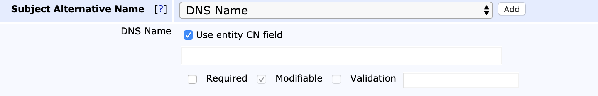

EJBCA 7.0.1 Release Notes
Hot on the heels of EJBCA 7.0, we'd like to present the release of EJBCA 7.0.1 - implementing a ton of neat functionality that didn't make the cut for the main release. On top of the list of most commonly requested features is PSD2 support, but please read on to find all the reasons to upgrade to EJBCA 7.0.1!
Full PSD2 Support
EJBCA 7.0.1 provides full support for the Payment Services Directive as defined by EU Directive 2015/2366. PSD2 allows eIDAS Trusted Certificate Providers to issue PSD2 QWAC certificates to third party FinTech companies, which in turn gives them access to financial APIs hosted by European banks. To enable PSD2 in your instance of EJBCA, scroll down to the QC Statements extension of your certificate profile and enable the PSD2 option.

This will enable PSD2 fields in the RA UI during enrollment.

If you'd like to read more about PSD2, we've written blog post about it on PrimeKey's blog and our own development blog.
Domain Blacklist Validator
As a request from some of our CABF-customers, we've implemented a Domain Blacklist Validator. The new Validator takes a list of partial and complete domain names, and can be configured to either block them outright (if run during the data phase) or cause an approval action to be triggered in the final approval step (if approvals are activated).

All of the approving RA administrators in the final approval step will be shown the following warning before the approval passes:
dnsName SAN can be Automatically Populated by the CN
We've added a setting to End Entity Profiles to allow the dnsName Subject Alternative Name field in a certificate to be filled in by the Common Name (CN) value in the Subject DN.

Configurable SN Entropy, Default Value Raised to 20 Octets
CA/B Forum requires the use of 64 bit entropy when generating serial numbers (see CABF Ballot 164[external link]). Due to only positive values being valid serial numbers, 8 octets will only result in 63 bit entropy as the most-significant-bit will always be 0, hence we recommend larger sizes than 8 octets. Previously this was set using the property ca.serialnumberoctetsize in cesecore.properties, which has now been dropped and the value is instead set directly in the CA.
Possible values may range between 4 and 20 octets, and the default for all new CAs is 20 while upgraded CA's will retain whatever value was set in ca.serialnumberoctetsize, or 8 if none was set.
Downloadable CSRs
In EJBCA 7.0.1 we've started storing CSRs along with the associated certificate (instead of only the last submitted CSR as it was earlier), so you now have access to download and review all CSRs submitted and processed in the past.
URL Metadata Type Added to Approvals
Upon popular request, we've added a URL metadata type to the partitioned approval profiles. It allows the approving RA administrator to enter a URL while performing the approval, e.g pointing to a file upload at an external location.
Upon later review of the approval, it will show up as a hyperlink:
Experimental: Configuration Checker
Lastly, we're trying out an experimental new feature in EJBCA 7.0.1, the Configuration Checker. It displays an (incomplete) list of common configuration issues on the front page.
If you'd like to try it out, it can be activated in its own tab under the System Configuration:
Roadmap Update
Common Criteria
Our common criteria process is ongoing - the Security Target (ST) is now complete and has been sent for evaluation. Preliminary date for a certified version of EJBCA is still projected to be at the end of this summer.
Appliance Release
EJBCA 7.0.1 will be available on Appliance 3.3.0, due at the end of March/beginning of April.
Up Next
The teams are rearing to go to work on EJBCA 7.1. Main features are going to be Partitioned CRLs, multi-value RDN support and a couple of surprises. See you then!
Upgrade Information
Read the EJBCA Upgrade Notes for important information about this release. For upgrade instructions and information on upgrade paths, see Upgrading EJBCA.
Change Log: Resolved Issues
For full details of fixed bugs and implemented features in EJBCA 7.0.1, refer to our JIRA Issue Tracker.
New Features
ECA-4991 - Allow configuration of serial number octet size per CA
ECA-5865 - Add a summary of visible prior approval steps before final approval
ECA-6052 - Add Domain Blacklist validator
ECA-7206 - End Entity Profile setting to allow dnsName SAN field to be automatically populated by the CN in a CSR
ECA-7340 - PSD2 GUI support when adding end entity
ECA-7770 - Database protection for CSR in CertificateData
ECA-7779 - Implement test function in SCP Publisher
ECA-7780 - Implement EJBCA Issue Checker Framework
ECA-7808 - Add Domain Blacklist Validator class with basic structure
ECA-7809 - Persistance of Domain Blacklists
ECA-7810 - Show warning at validation failure in Approval process
ECA-7860 - New Approval issuance phase for Validators
ECA-7861 - Implement DomainBlacklistAsciiLookalikeNormalizer
ECA-7863 - Implement Domain Blacklist Checker classes
Improvements
ECA-5438 - English translations for ErrorCodes in the RA
ECA-5667 - Add a file link metadata type to Approvals
ECA-6075 - RA Web: Improve validator error messages
ECA-7526 - Add a description field to Certificate and End Entity Profiles
ECA-7607 - Optimize ejbca-db-cli speed when verifying audit log
ECA-7693 - CSR download and clear buttons in Ra Web
ECA-7709 - Update tag library schemas for JEE7
ECA-7756 - Improve error message when CA signingkey was changed without renewing CA certificate
ECA-7782 - Add documentation for the EJBCA Issue Checker
ECA-7783 - Attach access control logic to tickets
ECA-7791 - Update to JEE7 API library
ECA-7793 - Log4j priority is deprecated
ECA-7803 - Label the EJBCA Issue Checker as experimental
ECA-7812 - Unit tests for matching against Blacklists
ECA-7817 - Add autocomplete=off to all h:inputSecret fields
ECA-7826 - Wrap tickets descriptions in a class
ECA-7837 - Make Dynamic UI Property handle empty lists
ECA-7838 - Include two choosable head banners for test and acc systems
ECA-7840 - Implement Integer multiple-choice for DynamicUiProperty
ECA-7842 - System test for "Approval" validation phase
ECA-7843 - EJBCA startup does full table analysis on Oracle causing timeout issue during startup
ECA-7852 - Change the menu option "View Log" into "Audit Log"
ECA-7854 - Rename "Constraints" label in CT logs to "Log Sharding"
ECA-7862 - Investigate and fix shouldConvertToCorrectEndEntityInformation test failure.
ECA-7870 - Introduce a ValidatorsHelper for UI tests
ECA-7871 - Add more path examples for windows paths in properties files
ECA-7872 - Update the documentation tags and improve labels for roles pages
ECA-7882 - Sort Admin UI lists ignoring case
ECA-7883 - Rename "Issue Checker" to "Configuration Checker"
ECA-7887 - Improve Domain Blacklist checkers
ECA-7889 - Syntax check of domains in domain blacklists
ECA-7897 - Disallow "Abort certificate issuance" option for Approval Request issuance phase
ECA-7898 - Disallow Approval Request issuance phase for CAA Validators
ECA-7900 - Show matching blacklist entry when a domain is blacklisted
Bug Fixes
ECA-5326 - SCEP RA mode should not require batch generation checkbox in EE profile
ECA-7608 - CSR stored in End Entity is never cleared but re-used
ECA-7664 - Regression: Cannot enable CMS for existing CA
ECA-7717 - Trying to save P11 crypto token with incorrect PIN makes EJBCA think token already exists
ECA-7758 - Fix WebTest failures
ECA-7759 - Regression: Widgets gone missing in JSF conversion - End Entity Profiles -> notifications
ECA-7772 - Avoid foreign key constraints creation for obsolete AccessRulesData and AdminEntityData
ECA-7773 - Hide harmless alter table error from DB CLI import command
ECA-7775 - ziprelease-cesecore-src and ziprelease-cesecore-bin build targets broken
ECA-7776 - ConfigDump: Publish Queue Process Service configs are being exported as "Renew CA Service" Workers
ECA-7777 - Can't view end entity with deleted profile in RA
ECA-7786 - Regression: not possible to export CA keystore
ECA-7787 - Regression: Edit CA page does not show key aliases from Statedumps correctly
ECA-7794 - SCP Publisher does not store/load the password properly
ECA-7796 - Fix FindBugs warnings
ECA-7804 - Update MySQLDialect since it uses MyISAM instead of InnoDB with upgraded Hibernate libs
ECA-7805 - Fix failures in ConfigdumpCoreUnitTest and YamlWriterUnitTest
ECA-7806 - NPEs during scanning
ECA-7807 - NumberFormatException during scan
ECA-7821 - Regression: CA key types not updated when creating CA and selecting signature algorithm
ECA-7850 - Fix checks for numeric IDs
ECA-7855 - SHA384 missing from algorithms selection when returning signed CMP messages
ECA-7858 - Not all certificate profiles shown in Issue Checker for limited admins
ECA-7859 - Regression: addendentity CLI command can not be used for auto-generated passwords
ECA-7873 - Regression: CA cert list in CA Structure & CRLs changes order causing CRL generation to fail
ECA-7874 - InstantiationException when trying to view JSP pages
ECA-7876 - Cannot create CVC CA on JBoss EAP 7.1
ECA-7877 - View Certificate in Edit CA screen not available for CV Certificates
ECA-7879 - Regression: list of CAs is sorted case sensitive
ECA-7885 - Upload controls on Edit Validator page does not work
ECA-7888 - DynamicUiProperty of label type cause NPE on post back to server
ECA-7890 - Missleading error message in adminweb when Domain Blacklist Validation fails
ECA-7896 - EditCAsMBean.initApprovalRequestItems() doesn't init any request item types
ECA-7899 - Increase POST Size for New Blacklist Validator
ECA-7901 - Blacklist validator classes are no longer found ini GUI
Tasks
ECA-7764 - Add a Magnum-CI job that tests trunk on an HSM enabled installation.
ECA-7813 - Check upload file size limit on Appliance
ECA-7816 - Place holder issue for GUI testing of Domain Blacklist Validator
ECA-7820 - Remove installation documentation for WildFly 8,9 and Glassfish
ECA-7864 - DOCUMENTATION: please add FIPS same key restriction
ECA-7880 - Document the Domain Blacklist Validator